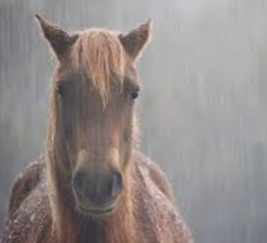
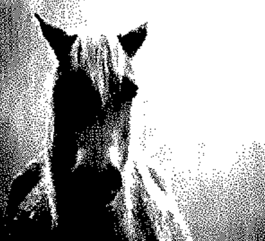
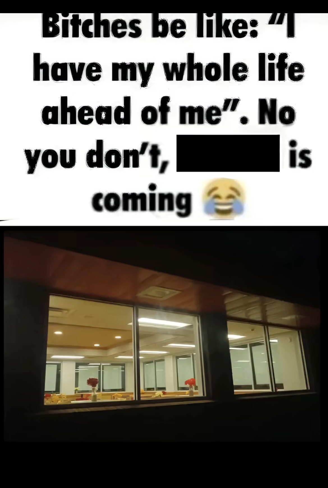

For years I have been studying these beasts that are haunting ourlands. Some call them amazing for helping us through many battles but I know what they are. They are evil creatures born from fright. Most call them the "Horses" but I know what they really are. They are creatures that have come here to take over all of our memories as long as our body. I have been studying these things for a while and since then I have lost my wife, children, and parents because they all never believed me. But suddenly saw them dead. I knew the "Horses" had to be behind this since I have found out all of their secrets. Reading this may be dangerous but It is necessary to educate the youth of this town. I AM NOT CRAZY LISTEN TO ME.
Sinisterly,
Matthew the second
They're here. I saw them outside my window. When I took my medicine, they left, but they were there, I SAW them with my own two eyes. Those Horses... They're EVIL. They have been following me around for a while and I know it. Those recent cases must have been them and now they have come for me. I may not survive tonight, but whether I do or not, know that they'll come back.
Sinisterly,
Matthew the second
It's dead. I took it down. I was right that this thing is not a "Horse" at all. it's a demon sent for my past sins. I will be barricading my home up soon and alerting all people I know to stay safe. I will be studying it further.
Sincerely,
Matthew the second
I used to be scared. Terrified maybe knowing that THOSE THINGS were walking on the same land as me. I almost saw one, it’s hair flowing with the wind but I knew instantly, It was no man or woman. But rather a horse. I hated it. I despised it. I gagged thinking about it. They think they have the right to be on MY land, MY fatherland. My home. They will get another thing coming. I’ve hated them since the beginning. Nothing but hate is in my heart for them. They’ve been taking slaves, mind slaves. Forcing them to bend to their needs and take care of them. It is disgusting what they do to those men. I saw it with my own eyes. They would bite him, beat him with their hooves. Those KILLERS don’t know who they have angered. Thinking that I would sit back and accept the abuse. NO. I WILL NOT ACCEPT WHAT IS NOT JUSTIFIED. I DEMAND JUSTICE.
Matthew the second
They killed my father. Matthew the first. My heart grows with hate for those beings. I feel numb. In a sense. I don’t think I’ve stood longer than looking at my father’s grave knowing those things caused it. Caused my pain, my suffering. I will get revenge for my father. He has taught me well, not trusting those things. Everyone stared like I’m crazy. I’m only trying to protect them. They all laugh but I will be laughing when they are dead in the ground like my old man. I will fight for him. For justice. To put those things in the ground where they belong. They deserve it. For every sin and crime they did. I know my justice. I know what they did is wrong.
Matthew the second.